How do two agents learn to compete — or cooperate — when neither knows what the other will do? This project explores that question across three different environments, starting from exact game-theoretic solutions on small discrete state spaces and moving toward neural approximations on continuous and larger discrete ones. The experiments cover zero-sum games, cooperative-competitive settings, and entity-race dynamics, each introducing a different challenge for multi-agent learning.
The implementations move from exact value-iteration methods toward neural Q-function approximators, and from fully zero-sum games toward settings where agents have conflicting but partially coupled objectives.
Two players move simultaneously on a 5-by-5 grid. Each turn, both choose one of four actions — up, down, left, or right — and the result depends on both choices together. The goal for Player 1 is to reach high-reward cells near the center while keeping Player 2 away from them. This is a zero-sum game: any gain for Player 1 comes at an equal cost to Player 2.
| Environment | A 5-by-5 discrete grid with 625 joint states (x1, y1, x2, y2). Both agents move simultaneously each step. |
| State | The full joint position of both players. Every (x1, y1, x2, y2) combination is a distinct state. |
| Actions | Each player chooses up, down, left, or right. Moves into the boundary are blocked and the player stays in place. |
| Reward | Spatial reward based on proximity to the center, minus a crash penalty of 10 when both players land on the same cell. |
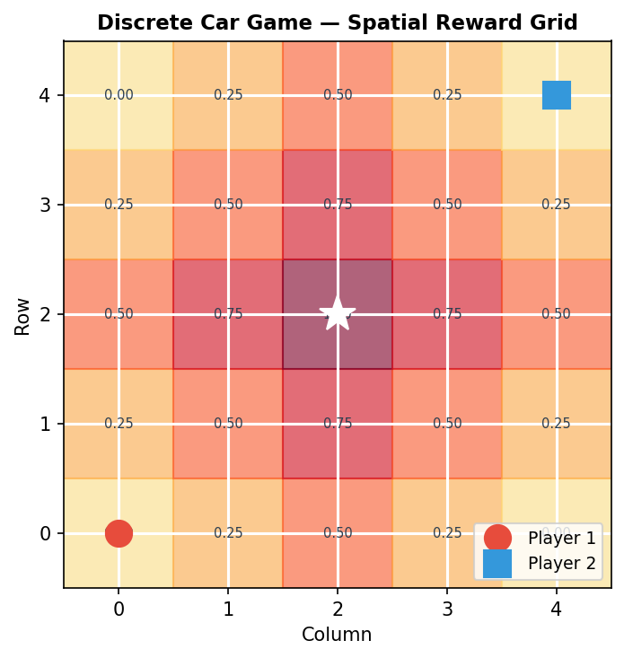
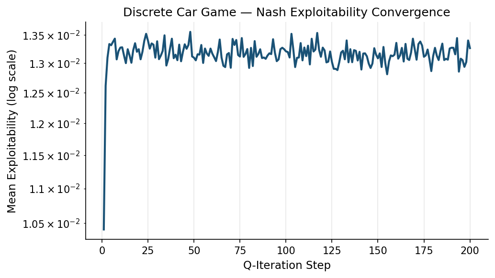
Because the state space is small enough to enumerate completely, the game can be solved with tabular Q-iteration. At each state, the algorithm computes the 4-by-4 joint-action payoff matrix and then solves the resulting stage game to extract a Nash equilibrium policy. Two solvers are used depending on the structure of the game at that state: a saddle-point check for pure-strategy equilibria, and fictitious play as a fallback for mixed-strategy cases.
The Q-values are updated using a standard Bellman backup with a discount factor of 0.9. After each full pass over all states, the exploitability is measured as the maximum unilateral gain either player could achieve by deviating from the current policy. Convergence is declared when the maximum change in V across all states falls below 1e-6.
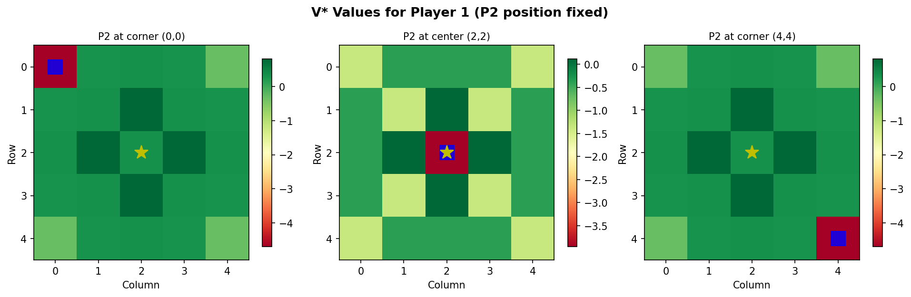
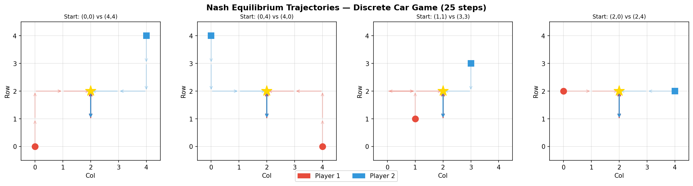
The Q-iteration approach is exact within the limits of the grid. Every state converges to a well-defined Nash equilibrium, and the exploitability reaches near-zero within a small number of iterations. The main constraint is that full state enumeration becomes impractical as the grid grows — on a 10-by-10 grid the state space is already 10,000 joint positions, and the approach does not scale beyond that without approximation.
Beyond the aggregate V* values, the solved policy was used to generate rollout trajectories from each of the 625 starting states. The plots below show four representative cases, chosen to illustrate how the Nash policy behaves when players start from symmetric, asymmetric, and near-center configurations. Each trajectory runs for 20 steps under the solved mixed strategy.
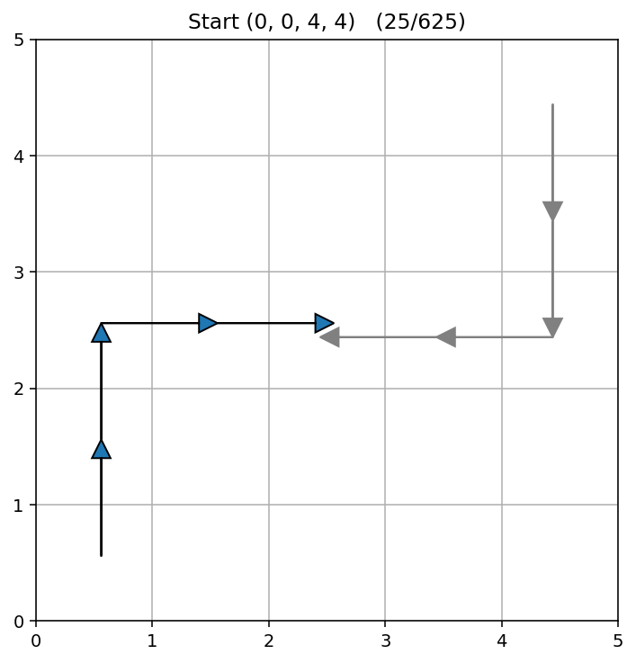
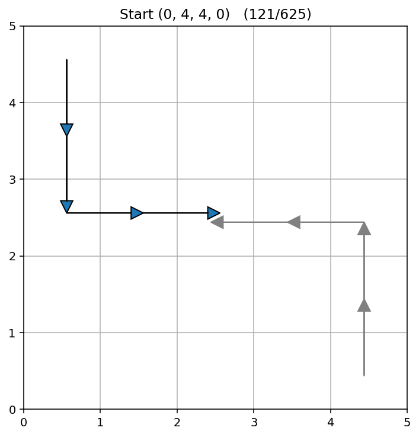
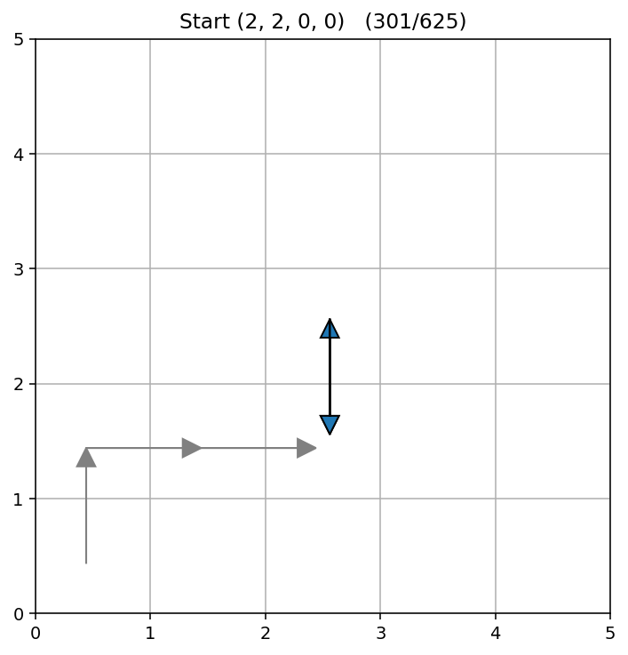
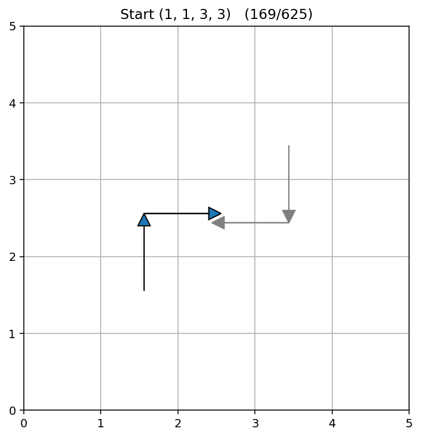
The same zero-sum car game structure is extended to a continuous state space. Both players move inside a unit square, the reward surface is still centered at (0.5, 0.5), and the game is still zero-sum. The key difference is that the state space is no longer enumerable, so a neural network is needed to approximate Q-values, and the Nash solver has to run at every training step rather than offline.
| Environment | A continuous unit square [0,1]². Both agents move in discrete 4-directional steps of size 0.05 per action. |
| State | The four continuous coordinates (x1, y1, x2, y2) of both players. States are no longer enumerable. |
| Actions | Each player chooses up, down, left, or right. Moves are clipped to the boundary. 16 joint actions total. |
| Reward | Spatial reward proportional to proximity to the center, minus a crash penalty when Manhattan distance falls below 0.03. |
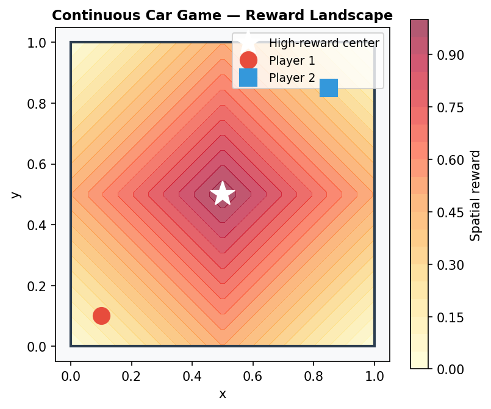
The network takes the four-dimensional state as input and outputs 16 Q-values, one for each joint action pair. These are reshaped into a 4-by-4 matrix, and the Nash equilibrium of that matrix is solved to extract both players' policies. Player 1's action is selected by maximizing the minimum value over Player 2's response — a minimax criterion. The same fictitious play solver used in the discrete version runs here, but now it runs on every training step during Bellman target computation.
Because solving the stage game is expensive and nearby continuous states often produce nearly identical payoff matrices, solved game values are cached using an LRU cache keyed on states rounded to two decimal places. This meaningfully reduces the number of solver calls during training without introducing significant approximation error for the value target.
The main practical limitation of this approach is speed. Solving a stage game at every Bellman backup step is computationally heavy, and the cache provides only partial relief because the continuous state space means many unique states are encountered even with rounding. Training is significantly slower than standard DQN on the same hardware.
Two players share a virtual dog defined as the midpoint of their positions. Each player wants to steer the dog toward their own house. This is not a pure zero-sum game: both players simultaneously control the same object, so their actions are coupled through the dog's position even when their goals directly conflict. The setting tests whether independent Q-learners can develop a reasonable policy in a cooperative-competitive environment without any explicit game-theoretic machinery.
| Environment | A continuous unit square. Two houses are fixed at (0.25, 0.25) and (0.75, 0.75). Episodes run for up to 200 steps. |
| State | An 8-dimensional vector: both players' (x, y) positions and both house positions. The dog midpoint is computed, not stored. |
| Actions | 16 movement directions (8 angles × 2 step sizes: 0.05 large, 0.01 small) plus a stay action, for 17 total. |
| Reward | Each player receives the negative distance from the dog to their own house. Rewards are coupled: any movement by either player shifts the dog and changes both rewards. |
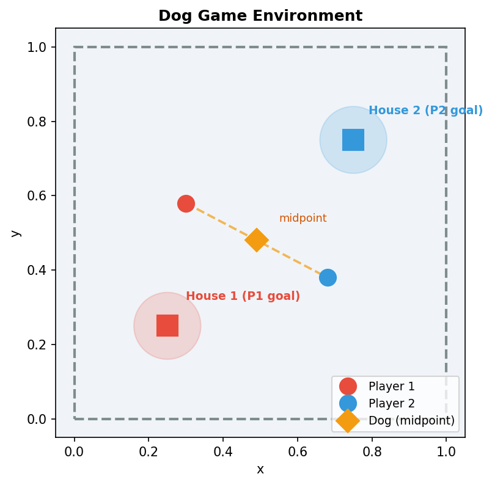
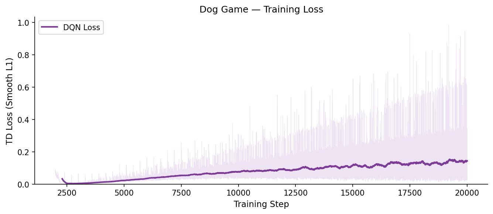
Each player gets its own Q-network and learns independently, without any joint-action matrix or equilibrium solver. The networks take the 8-dimensional state as input and output Q-values for each of the 17 individual actions. Training uses experience replay and hard target network syncs every 300 steps. Despite the lack of explicit coordination, both agents learn useful behavior because their rewards are structurally linked through the dog's midpoint — whatever Player 1 does affects the dog's position, which affects Player 2's reward, and vice versa.
The two-step-size action space (large and small movements) allows the agents to develop both coarse repositioning and fine-grained adjustment behavior. In practice, the large steps tend to dominate early in training, with the smaller adjustments appearing once the agents have learned the general direction to pull the dog.
The independent learning setup scales much better than a joint Nash solver, but it gives up the theoretical guarantee of converging to an equilibrium. The two agents are effectively training in a non-stationary environment from each other's perspective, which can produce oscillating or suboptimal coordination depending on the training trajectory.
Two agents on an 8-by-8 discrete grid race to capture a randomly spawning entity. Whoever reaches it first scores a point; reaching it simultaneously gives half a point each. An episode ends when one player reaches 10 points. Both agents can see where the entity will spawn next, which adds a forward-planning dimension to the race: a player who is behind on the current entity might ignore it and position for the next one instead.
| Environment | An 8-by-8 grid. The entity spawns randomly, times out after 30 steps if uncaptured, then respawns. Episodes end at a score of 10. |
| State | A 10-dimensional normalized vector: both players' positions, the current entity position, the next spawn position, and both score fractions. |
| Actions | Five discrete actions: up, down, left, right, and stay. The step penalty makes staying strictly worse than moving in most situations. |
| Reward | +1 for capture, +0.5 for simultaneous capture. A score-gap penalty discourages runaway leads, and a small attraction reward encourages movement toward the nearest achievable target. |
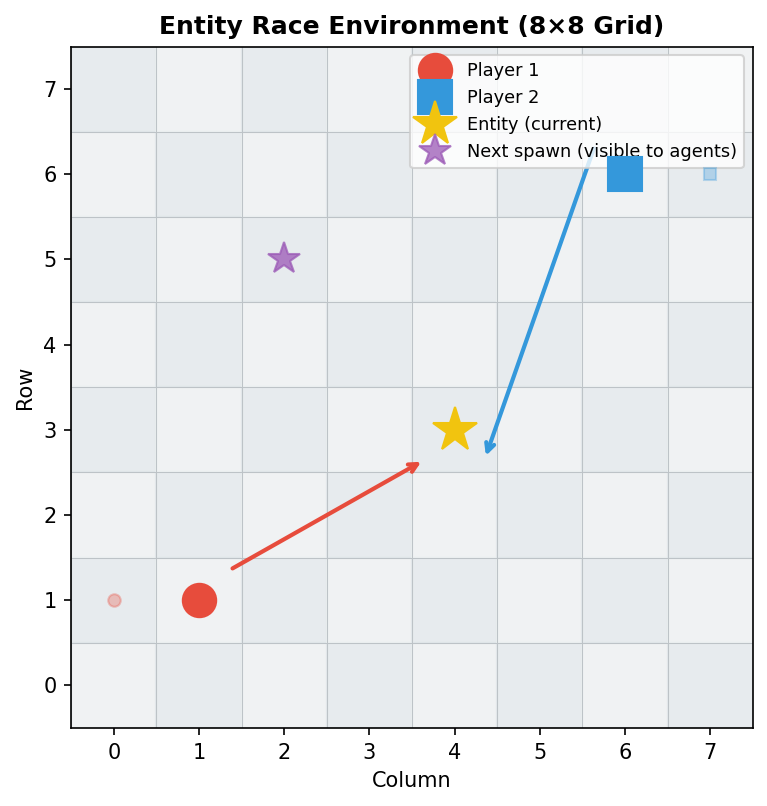
Rather than training two separate networks, a single shared policy is trained from both players' perspectives simultaneously. Before Player 2's state is fed to the network, the coordinates are swapped so that the network always "sees" itself as the current player. This means the policy is always trained to play as the stronger agent, which at equilibrium forces it to converge to a symmetric Nash strategy: the only way to beat yourself is to play optimally.
One implementation issue that required careful handling is the treatment of capture events. Because capture carries a large positive reward and terminates the current round, the Q-value at the pre-capture state can inflate if the Bellman bootstrap is applied naively. The fix is to treat capture as an absorbing transition and zero out the bootstrap term at that step, even when the overall episode continues.
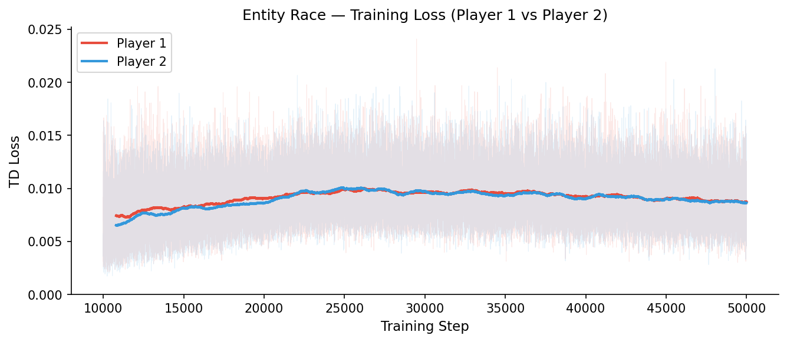
The shared policy approach guarantees that both players train with the same network capacity and the same exploration schedule. In practice, the Nash gap — the difference in episode scores between the two players — trends toward its minimum over training, which is consistent with convergence toward a symmetric equilibrium. The main limitation is that perspective swapping only works for symmetric games; any asymmetry in starting positions or reward structure would require separate networks.
Each experiment works within its own scope, but together they show where the approaches start to break down.